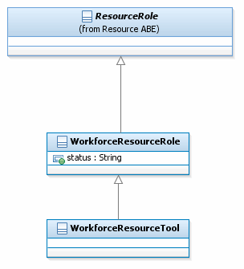

Overview
Top
Package
Element
Workforce Addendum Figures UML Documentation
SID Models::Enterprise Domain::Workforce ABE::Workforce Addendum Figures::Figure WFM.05 - Workforce Resource Role
Diagram Figure WFM.05 - Workforce Resource Role

Properties:
View
Name
Figure WFM.05 - Workforce Resource Role
Type
Class Diagram
Overview
Top
Package
Element
Workforce Addendum Figures UML Documentation